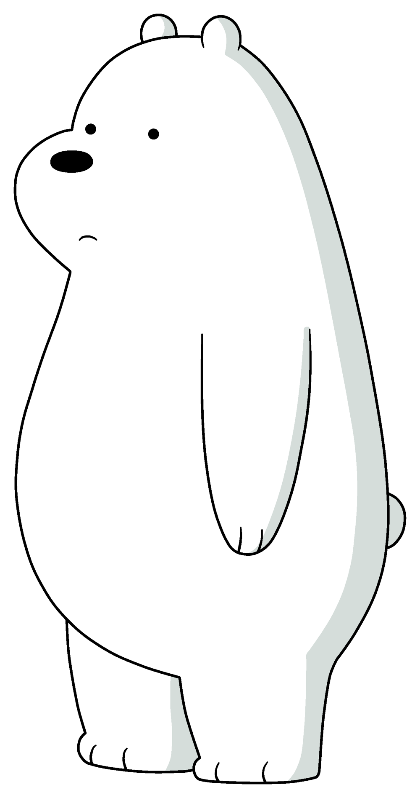

Hello, I'm Ice Bear
I'm from We Bare Bears
Ice Bear is the tritagonist of the Cartoon Network series *We Bare Bears* and its movie. He is voiced by Demetri Martin as an adult. In *We Bare Bears*, he is voiced by Max Mitchell. Ice Bear is an anthropomorphic polar bear. Even though he is the youngest of the Bears, he is noticeably taller, slimmer, and stronger than his brothers.
